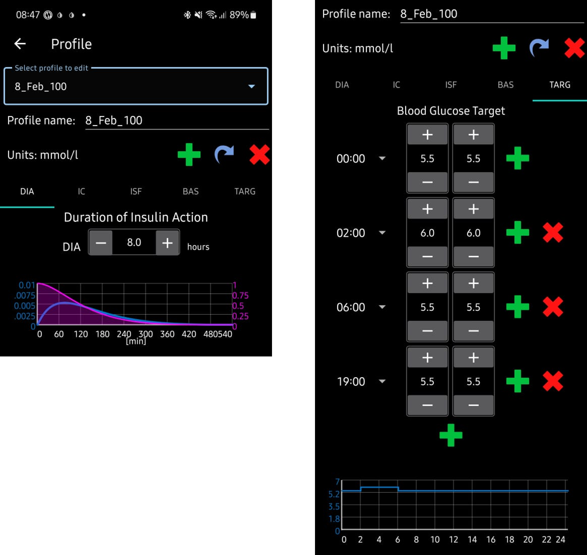
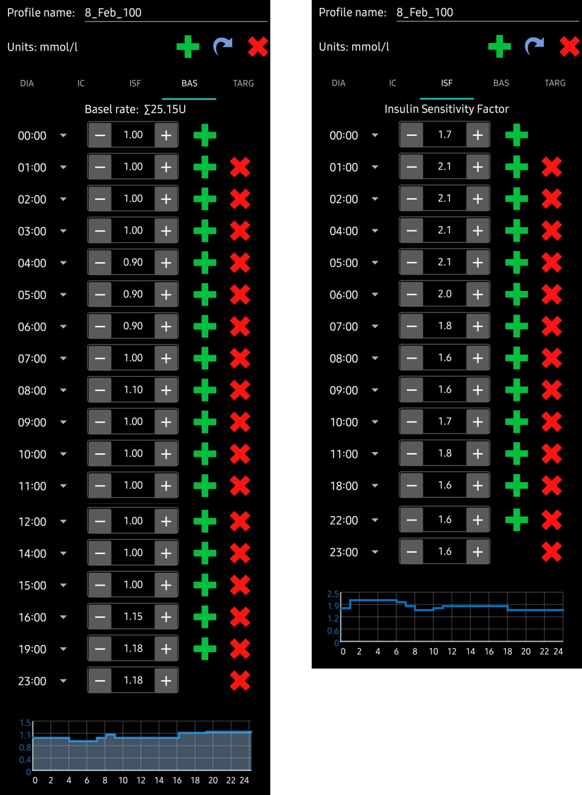
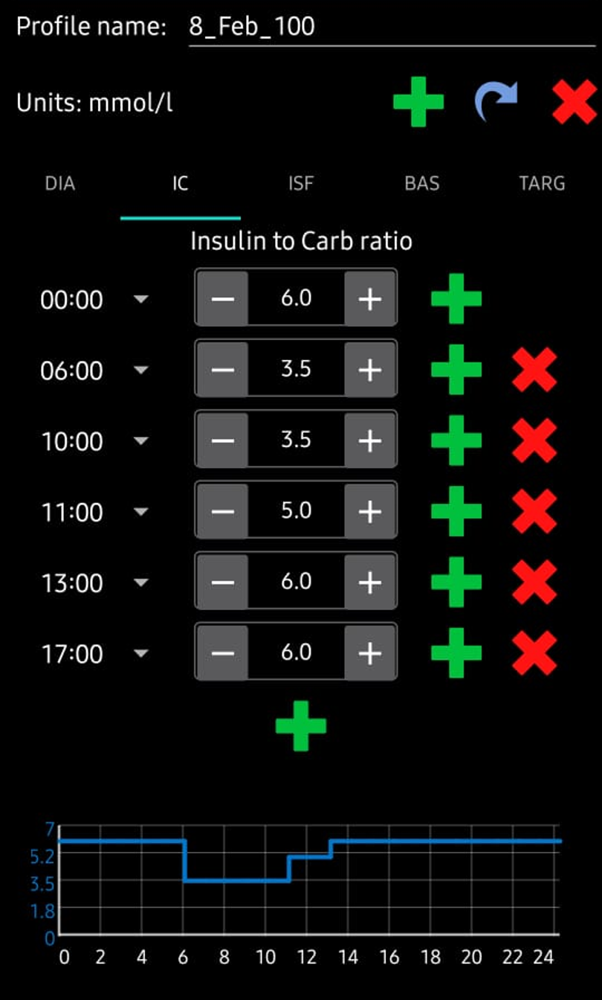

Preparing to start with AAPS
Overview of the AAPS documentation
Welcome. This documentation aims to guide users on every aspect of the Do-It-Yourself (DIY) system, Android Artificial Pancreas System (AAPS), which is also commonly referred to as ‘looping’.
An expanded index of the documentation can be found here, and you can also use the tabs on the left of the page to navigate through the different sections. The glossary explains terms that you may not be familiar with.
(preparing-safety-first)=
Safety First
“With great power comes great responsibility…”
Technical safety
AAPS has an extensive set of safety features. These impose constraints which are gradually removed through staged completion of a series of Objectives which involve testing specific parameters and answering multiple choice questions. AAPS features are unlocked as the Objectives are successfully completed. This process allows the user to migrate safely in stages from Open Loop to Closed Loop, while learning about the different features of AAPS.
The Objectives have been designed to achieve the best possible introduction to AAPS, taking into consideration the typical errors and general trends AAPS developers have observed with new users. Mistakes can happen because the beginner is inexperienced and too eager to get started with AAPS, or has overlooked key points. The Objectives aim to minimise these issues.
Medical safety
:::{admonition} Avoid permanent and painful damage to your eyes and nerves :class: danger Caution is advised concerning rapid improvements in blood glucose control and lowering of HbA1c :::
An important safety consideration is that a rapid reduction in HbA1c and improved blood glucose control in those who have had elevated glucose levels for some time can cause permanent damage. Many people with diabetes are unaware of this, and not all clinicans make their patients aware of this issue.
This damage can include sight loss, and permanent neuropathy (pain). It is possible to avoid this damage occuring, by reducing average glucose levels more slowly. If you currently have an elevated HbA1c and are moving to AAPS (or any other closed loop system), please discuss this potential risk with your clinical team before starting, and agree a timescale with gradually decreasing safe glucose targets with them. You can easily set higher glucose targets in AAPS initially (currently, the highest target you can select is 10.6 mmol/L but you can also maintain a purposefully weak profile if needed), and then reduce the target as the months pass.
How quickly can I reduce my HbA1c without risking permanent damage?
One retrospective study of 76 patients reported that the risk of progression of retinopathy increased by 1.6 times, 2.4 times and 3.8 times if the Hba1C dropped 1%, 2% or 3% respectively over a 6 month period. They suggested that the "decrease in HbA1c value during any 6-month period should be limited to less than 2% in order to prevent the progression of retinopathy....Too rapid a decrease at the initiation of glycemic control could cause severe or transient exacerbation of the progression of retinopathy."
N.B. If you use different HbA1c units (mmol/mol rather than %), click here for a HbA1c calculator tool.
In another retrospective evaluation of 954 patients, researchers noted that:
"With a decrease in HbA1c of 2–3% points over 3 months there was a 20% absolute risk of developing treatment-induced neuropathy in diabetes, with a decrease in HbA1c of >4% points over 3 months the absolute risk of developing treatment-induced neuropathy in diabetes exceeded 80%."
A commentary on this work agreed that to avoid complications the goal should be to reduce A1c by <2% over 3 months. You can read other reviews on the topic here and here.
It is generally recognised that newly diagnosed type 1 diabetics (who often have very high HbA1c at diagnosis, before starting insulin therapy) appear to be able to rapidly reduce their HbA1c immediately after diagnosis without encountering these risks to the same extent, because they have not had elevated blood glucose levels for such a sustained period. However, it is still a consideration which you should discuss with your clinician.
No SGLT-2 inhibitors
:::{admonition} NO SGLT-2 inhibitors :class: danger SGLT-2 inhibitors, also called gliflozins, inhibit reabsorption of glucose in the kidney. Gliflozins incalculably lower blood sugar levels, and so you MUST NOT take them while using a closed loop system like AAPS! There would be a significant risk of ketoacidosis and/or hypoglycemia! The combination of this medication with a system that lowers basal rates in order to increase BG is especially dangerous.
In a nutshell: - Example 1: risk of Hypo
During lunch, you use AAPS to bolus based on consuming 45g of glucose. The problem is that unbeknownst to AAPS, the inhibitors cause the body to eliminate some of the carbs resulting in your body having too much insulin compared to the absorbed Carbs, resulting in hypoglycemia.
- Example 2: risk of Ketoacidosis
The inhibitors eliminate some of the carbs in the background causing a reduction in your BG. AAPS will automatically instruct the pump to decrease insulin intake including basal. Over time this can result in your BG remaining below target value to the point where the body does not have enough background insulin to absorb any carbs resulting in Ketoacidosis. Ordinarily, Ketoacidosis develops in T1D patients because their pump fails which would trigger alerts on their phone and be noticeable due to a high BG value. However, the danger with Gliflozins is that there would be no AAPS alerts as the pump remains operational and the BG potentially remains within target.
Common brand names of SGLT-2 inhibitors include: Invokana, Farxiga, Jardiance, Glyxambi, Synjardy, Steglatro, and Xigduo XR, others. :::
Key principles of looping with AAPS
The key principles and concepts of looping must be understood before using AAPS. This is achieved by investing your personal time into reading the AAPS documentation, and completing the Objectives which aim to provide you with a solid platform for safe and effective use of AAPS. The volume of AAPS documentation may seem overwhelming at first but be patient and trust the process - with the proper approach, you'll get there!
The speed of progression will depend upon the individual, but be aware that completion of all the objectives typically takes 6 - 9 weeks. Many people start to build, install and setup AAPS well in advance of starting to use it. To aid with this, the system has a "virtual pump" which can be used during completion of the early objectives, so that you can become familiar with AAPS without actually using it to deliver insulin. A detailed breakdown of the timeline is given below, be aware that by objective 8 of AAPS you are closed looping, the later objectives add in additional features like SMS commands and automations which are useful to some users, but not essential to the core function of AAPS.
Success with AAPS requires a proactive approach, a willingness to reflect on the BG data and flexibility to make the necessary adjustments to AAPS in order to improve your outcomes. Just as it is nearly impossible to learn to play a sport by reading about the rules alone, the same can be said of AAPS.
Plan for delays and minor issues in getting everything set up and running
In the preliminary stages of getting started with AAPS, you may experience difficulties getting all the components of the loop communicating effectively with each other (and potential followers), and when fine-tuning your settings. Some glitches cannot be resolved until AAPS is used in everyday life, but plenty of help is available on the Facebook group and Discord. Please plan accordingly and choose "good" times, like a quiet morning of a weekend (i.e. not late at night or when you are tired, or before a big meeting or travel) to troubleshoot and resolve issues.
Technology compatibility
AAPS is only compatible with certain types of insulin pumps, CGMs and phones, and some technology may not be available for use in various countries. In order to avoid any disappointment or frustrations, please read the CGM, pump and phone sections.
App build time and progressing to full looping
The time to build the AAPS app depends on your level of expertise and technical ability. Typically for inexperienced users, it can take up to half a day or a full day (with help from the community) in order to build AAPS. The process will significantly speed up for newer AAPS versions, as you become more experienced.
To aid the build process there are dedicated sections:
-
List of questions and answers for frequent errors that are likely to occur in FAQs (Section K);
-
“How to install AAPS? (Section D) which includes Troubleshooting Subsection.
How long it takes to get to closed looping depends on the individual, but an approximate timescale for getting to full looping with AAPS can be found (here)
Keystore & configuration settings export file
A “keystore” (.jks file) is a password encrypted file unique to your own copy of AAPS. Your Android phone uses it to ensure that nobody else can upgrade your own copy without the keystore. In short, as part of the AAPS build, you should:
-
Save the your keystore file (.jks file used to sign your app) in a safe place;
-
Keep a note of your password for your keystore file.
This will ensure that you can use that exact same keystore file each time an updated version of AAPS is created. On average, there will be 2 AAPS updates required each year.
In addition, AAPS provides the ability to export all your configuration settings. This ensures that you can safely recover your system while changing phones, upgrading/reinstalling the application with minimum disruption.
Troubleshooting
Please feel free to reach out to the AAPS community if there is anything you feel unsure about - there is no such thing as a silly question! All users with various levels of experience are encouraged to ask questions. Response times to questions are usually quick due to the number of AAPS users.
ask our facebook group
ask our discord channel
Section overview
AAPS documentation is made up of the following Sections:
What do I need?
This explains AAPS’ compatibility with CGMs (Continuous Glucose Monitors) and insulin pumps. It also provides a guide on the correct assembly of an AAPS system to ensure that it functions correctly in everyday life.
How to build and install AAPS
This section is the manual for building the AAPS. Strict adherence to the step-by-step instructions are required in order to successfully build AAPS. Please take your time.
[Component Setup]
This explains how to properly integrate each of the various different separate component parts into AAPS, as well as how to set them up to work as seamlessly as possible together. All components are listed under the separate sections including: CGM/FGM, Pumps and Phones
Configuration
This explains how to set and configure your ‘Profile’, ‘Insulin’, ‘BG Source’, ‘Pump’, ‘Sensitivity Detection’, ‘APS’, ‘Loop’, ‘Treatments’.
AAPS Use
This section provides a breakdown of the features provided by AAPS, with screenshots.
General Hints
Useful tricks on how to tackle looping issues such as time zones, and daylight saving (i.e. Spring Forward/ - Fall Back).
AAPS for Children
This is designed for parents or caregivers who want to build an AAPS for their child, or for adults who would like to have a significant other follow their data. It also explains the extra features necessary in order to support and safely control AAPS remotely.
Troubleshooting
This section contains links to help solve issues when building or using AAPS.
Frequently asked Questions, FAQ
This section addresses specific questions which tend to come up when building or using AAPS.
Glossary
This contains a list of the acronyms (or short-term names) or defined terms developed specifically for AAP (for instance, the terms ‘ISF’ or ‘TT’ have special meanings in AAPS).
Where to go for help?
This section is aimed to provide new users with links on resources in order to get help including accessing community support made up of both new and experienced users who can clarify questions, and resolve the usual pitfalls that come with AAPS.
Section For Clinicians
This is a section specificially for clinicians who want to know more about AAPS and open source artificial pancreas technology. There is also guidance on how to talk to your clinical team in the Introduction.
What are we going to build and install?
An Android Phone Application: AAPS
AAPS is fundamentally an app that runs on android smartphones & devices. You are going to build the AAPS app (an apk file) yourself, using a step-by-step guide, by downloading the AAPS source code from Github, installing the necessary programs (Android Studio, GitHub desktop) on your computer and building your own copy of AAPS app. You will then transfer the AAPS app across to your smartphone (by email, USB cable etc.) and install it.
A reporting server: NightScout (Tidepool*)
In order to fully take advantage of AAPS, you need to setup a Nightscout server. You can do this yourself (link to instructions) or alternatively, pay a small fee for a managed Nightscout service to be set up for you (link to T1 pal 10.be etc). Nightscout is used to collect data from AAPS over time and can generate detailed reports correlating CGM and insulin patterns. It is also possible for caregivers to use Nightscout to remotely communicate with the AAPS application, to oversee their child’s diabetic management. Such remote communication features include real-time monitoring of glucose and insulin levels, remote bolusing of insulin (by texting) and meal announcements. Attempting to analyse your diabetes performance by looking at CGM data separately from the pump data is like driving a car where the driver is blind and the passenger describes the scene. () (as of 26-Jun-2023) Tidepool will be available as an alternative to Nightscout, with the upcoming version 3.2 of AAPS*.
Maintenance of the AAPS system
Both Nightscout and AAPS must be updated approximately once a year, as improved versions are released. You will have step-by-step instructions on how to do this on your preconfigured computer. In some cases, the update can be delayed, in others it is strongly recommended or considered essential for safety. Notification of these updates will be given on the Facebook groups and Discord servers. The release notes will make it clear what the scenario is. There are likely to be many people asking similar questions to you at update time, and you will have support for performing the updates.
(preparing-how-long-will-it-take?)=
How long will it take?
As mentioned earlier, using AAPS is more of a “journey” that requires investment of your personal time. It is not a one-time setup. Current estimates for building AAPS, installing and configuring AAPS and CGM software and getting from open loop to hybrid closed looping with AAPS are about 2 to 3 months overall. Here is breakdown:
| Tasks | Approx time |
|---|---|
| initial reading of the documentation: | 1-2 days |
| installing/configuring PC to allow the build: | 2-8 hours |
| building a Nightscout server: | 1 hour |
| installing (xdrip or BYODA or …) | 1 hour |
| configuring CGM->xdrip->APPS initially: | 1 hour |
| configuring AAPS->pump initially: | 1 hour |
| configuring AAPS->NightScout (reporting only): | 1 hour |
| optional (for Parents) - configuring NightScout <-> AAPS & NSFollowers: | 1 hour |
| Objective 1: Setting up visualization and monitoring, analysing basals and ratios | 1 hour |
| Objective 2: Learn how to control AAPS | 2 hour |
| Objective 3: Prove your knowledge | Up to 14 days |
| Objective 4: Starting on an open loop | 7 days |
| Objective 5: Understanding your open loop, including its temp basal recommendations | 7 days |
| Objective 6: Starting to close the loop with Low Glucose Suspend | Up to 5-14 days |
| Objective 7: Tuning the closed loop, raising maxIOB and gradually lowering BG targets | Up to 7 days |
| Objective 8: Adjust basals and ratios if needed, and then enable autosens | Up to 7-14 days |
| Objective 9: Enabling additional oref1 features, such as super micro bolus (SMB) | Up to 14 days |
| Objective 10: Automation | 1 day |
Once you are fully operational on AAPS, you will need to fine tune your setting parameters in order to improve your overall diabetic management.
Requirements
Medical considerations
In addition to the medical warnings in the safety section there are also different parameters, depending on which insulin you are using in the pump.
Insulin choice
AAPS calculations are based on insulin concentrations of 100U/ml (same as pump’s standard). The following types of insulin profile presets are supported:
- Rapid-Acting Oref: Humalog/NovoRapid/NovoLog
- Ultra-Rapid ORef: Fiasp
- Lyumjev:
For Experimental/Advanced users only: - Free-Peak Oref: Allows you to define peak of the insulin activity
Technical
This documentation aims to reduce the technical expertise required to an absolute minimum. You will need to use your computer to build the AAPS application in Android Studio (step-by-step instructions). You also need to set up a server over the internet in a public cloud, configure several android phone apps and develop expertise in diabetes management. This can be achieved by moving step-by-step, being patient, and help from the AAPS community. If you are already able to navigate the internet, manage your own Gmail emails, and keep your computer up-to-date, then it is a feasible task to build the AAPS. Just take your time.
Personal
Understanging and using AAPS requires a steep learning curve. It will take time, patience and significant efforts however it can be hugely beneficial as arguably proven by the 10,000 active users of AAPS.
Smartphones
AAPS and Android Versions
The current version of AAPS (3.1.0.3) requires an Android smartphone with Google Android 9.0 or above. If you are considering buying a new phone, (as of July 2023), Android 13 is preferred. Users are strongly encouraged to keep their build of AAPS up to date for safety reasons, however for users unable to use a device with Android 9.0 or newer, earlier versions of AAPS compatible for older Android versions remain available from our old repository (check the release notes for legacy versions).
Smartphone model choice
The exact model you buy depends on the desired function(s). There are currently two spreadsheets recording compatible smartphones and smartphones and watches. We encourage people to record their findings of compatibility and any issues here.
To report any problem with the spreadsheet please email hardware@androidaps.org
To make a donation of smartphone or smartwatch models that still need testing, please email donations@androidaps.org.
Users are encouraged to keep their phone version of Android up-to-date including with security parameters. However, if you are new with AAPS or are not a technical expert you might want to delay updating your phone until others have done so and confirmed it is safe to do so, on our various forums.
:::{admonition} delaying Samsung phones updates :class: warning Samsung has an unfortunate track record of forcing updates of their phones which cause bluetooth connectivity issues. To disable these forced updates you need to switch the phone to "developper mode" by: go to settings and about then software information, then tap build number u til it confirms you have unlocked developer mode. Got back to main settings menu and you should see a new developer options menu item. Open developer options and scroll to find auto system update and turn it off :::
:::{admonition} Google Play Protect potential Issue :class: warning There have been several reports of AAPS being shut down arbitrarily by Google Play Protect every morning. If this happens you will have to go to the google play options and disable “Google Play Protect”. Not all phone models or all Android versions are affected.. :::
Introduction to your AAPS profile
What is an AAPS profile?
Your AAPS profile is a set of five key parameters which define how AAPS should deliver insulin in response to your sensor glucose levels. AAPS has several additional modifiable parameters (like SMB settings), but using these well relies on your underlying AAPS profile being correct. The AAPS profile incorporates: duration of insulin action (DIA), glucose targets, basal rates (BR), insulin sensitivity factors (ISF) and insulin-to-carb ratios (IC or ICR). Screenshots from AAPS of an example profile are shown in below. Please note, this profile shows a large number of timepoints. When you start out with AAPS, your profile is likely to be much simpler. Profiles vary significantly from person-to-person, for examples of AAPS profiles for small children, teenagers and adults please see the later section, optimising your profile.
Duration of insulin action (DIA)
The duration of insulin action is set to a single value in AAPS, because your pump will continually infuse the same type of insulin. The remaining four parameters can be set to different values, changing hourly if required, over a 24 hour period.
Glucose targets
Glucose targets are set according to your personal preferences. For example, if you are concerned about hypos at night, you may set your target slightly higher at 117/mg/dL (6.5 mmol/L) from 9 pm - 7am. If you want to make sure you have plenty of insulin on board (IOB) in the morning before bolusing for breakfast, you may set a lower target of 81 mg/dL (4.5 mmol/L) from 7 am - 8 am. A glucose target, particularly if it is only short-term (less than 4 hours in duration), does not need to be the actual value you expect or want your glucose level to get to, rather, it is a good way to tell AAPS to be more or less aggressive, while still keeping your glucose levels in range. The figure below shows an example of how the DIA and glucose targets could be set in an AAPS profile.

For the final three parameters, basal rates (BR), insulin sensitivity factors (ISF) and insulin-to-carb ratios (IC or ICR), the absolute values and trends in your insulin requirements vary significantly from person to person, depending on your biology, gender, age, fitness level etc. as well as shorter term factors like illness and recent exercise. For more guidance on this, the book “Brights Spots and Landmines” by Adam Brown is an excellent book to read.
Basal rates
Your basal rate of insulin (Units/hour) provides background insulin, keeping your glucose levels stable in the absence of food or exercise.
Accurate basal rates enable you to wake up in range, and to skip meals - or eat - earlier or later in the day, without going high or low. The insulin pump delivers small amounts of rapid acting insulin every few minutes, to keep the liver from releasing too much glucose, and to move glucose into body cells. Basal insulin usually makes up between 40 - 50% of your total daily dose (TDD), depending on your diet, and typically follows a circadian rhythm, with one peak and one valley in insulin requirements over 24 hours. For more information, chapter 23 of “Think like a Pancreas” by Gary Scheiner is very useful.
Most type 1 diabetes educators (and people with type 1 diabetes!) agree that you should work on getting your basal rates correct, before attempting to optimise your ISF and ICR.
Insulin sensitivity factor (ISF)
The insulin sensitivity factor (sometimes called correction factor) is a measure of how much your blood glucose level will be reduced by 1 unit of insulin.
In mg/dL units: If you have an ISF of 40, each unit of insulin will reduce your blood glucose by approx. 40 mg/dL (for example, your blood glucose will fall from 140 mg/dL to 100 mg/dL).
In mmol/L units: If you have an ISF of 1.5, each unit of insulin will reduce your blood glucose by approx. 1.5 mmol/L (for example from 8 mmol/L to 6.5 mmol/L).
From these examples you can see that the smaller the ISF value, the less sensitive you are to insulin. So if you reduce your ISF from 40 to 35 (mg/dl) or 1.5 to 1.3 (mmol/L) this is often called strengthening your ISF. Conversely, increasing the ISF value from 40 to 45 (mg/dl) or 1.5 to 1.8 mmol/L) is weakening your ISF.
If your ISF is too strong (small value) it will result in hypos, and if it is too weak (large value), it will result in hyperglycemia.
A basic starting point for determining your daytime ISF is to base it on your total daily dose (TDD) using the 1,700 (94) rule. More detail is given in Chapter 7 of “Think like a Pancreas” by Gary Scheiner.
1700 (if measuring in mg/dl) or 94 (mmol/L)/ TDD = approx ISF.
Example: TDD = 40 U Approx ISF (mg/dl) = 1700/40 = 43 Approx ISF (mmol/L) = 94/40 = 2.4
See the figure below for an example of how the basal rates and ISF values could be set in an AAPS profile.

Insulin to Carb ratio (ICR)
The ICR is a measure of how many grams of carbohydrate are covered by one unit of insulin.
Some people also use I:C as an abbreviation instead of ICR, or talk about carb ratio (CR).
It is common to have different ICR at different times of day due to hormone levels and physical activity. Many people find they have their lowest ICR around breakfast time. So, for example, your ICR could be 1:8 for breakfast, 1:10 for lunch and 1:10 for dinner, but these patterns are not universal, and some people are more insulin resistant at dinner time, and require a stronger/smaller ICR then.
For example, a 1-to-10 (1:10) insulin-to-carb ratio means that you take 1U of insulin for every 10 grams of carbs eaten. A meal of 25g carbs would need 2.5U of insulin.
If your ICR is weaker, perhaps 1:20, you would only need 0.5U of insulin to cover 10 g of carbs. A meal of 25g of carbs would need 25/20 = 1.25U of insulin.
As shown in the figure below, when entering these values into an AAPS profile, we just enter the final part of the ratio, so an insulin-to-carb ratio of 1:3.5 is entered simply as “3.5”.

Why should I try to get my profile settings right? Can’t the loop just take care of it?
A hybrid closed loop can attempt to make insulin delivery adjustments to minimise poor glycemic control that results from having incorrect profile values. It can do this, for example, by withholding insulin delivery if you are hypo. However, you can achieve much better glycemic control if your profile settings are already as close as possible to what your body needs. This is one of the reasons that AAPS uses staged objectives to move from open loop pumping towards hybrid closed loop. In addition, there will be times when you need to open the loop (sensor warmups, sensor failure etc.), sometimes in the middle of the night, and you will want to have your settings right for these situations.
If you are starting with AAPS after using a different open or closed-loop pumping system, you will already have a reasonable idea of what values to use for basal rates (BR), insulin sensitivity factors (ISF) and insulin-to-carb ratios (IC or ICR).
If you are moving from injections (MDI) to AAPS, then it is a good idea to read up on how to make the transfer from MDI to pump first, and plan and make the move carefully in consultation with your diabetes team. "Pumping insulin" by John Walsh & Ruth Roberts and “Think like a Pancreas” by Gary Scheiner are very useful.
In the later section we present example profiles, dscuss how to set and optimise the parameters which form your AAPS profile(s), and provide guidance on additional resources such as Autotune which aim to automate optimisation of your profile.